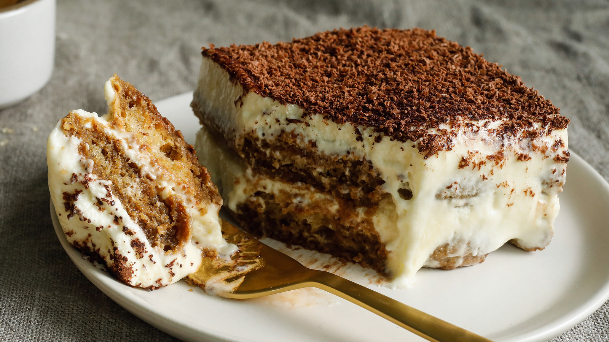

Tiramisu

Why should you make this recipe?
This delicious and unbelievably easy tiramisu recipe is made with coffee soaked lady fingers, sweet and creamy mascarpone, and topped with a dusting of cocoa powder. A traditional tiramisu recipe would include raw eggs which makes this recipe even better because it does not and still tastes just as good.
This recipe shooooould serve 9, but let's be honest... you'll probably indulge in the whole thing. No one's judging, though. We know it's that good.
Alright, let's get started!
Ingredients
- 1 1/2 cups heavy whipping cream
- 8 ounce container mascarpone cheese
- 1/3 cup granulated sugar
- 1 teaspoon vanilla extract
- 1 1/2 cups cold espresso
- 1 package Lady Fingers
- Cocoa powder
Instructions
- Using a KitchenAid stand mixer, add whipping cream to the bowl and begin beating on medium speed. Slowly add sugar and vanilla and continue to beat until stiff peaks. Add mascarpone cheese and mix until just combined. Set aside.
- Add coffee to a shallow bowl (a glass pie dish works great!). Dip (do not soak) both sides of the lady fingers in the coffee and lay them in a single layer on the bottom of an 8x8" pan or similar size.
- Smooth half of the mascarpone mixture over the top. Add another layer of dipped lady fingers. Smooth remaining mascarpone cream over the top.
- Dust cocoa powder generously over the top using a mesh strainer.
- Refrigerate for at least 4 hours before serving.
- Enjoy!